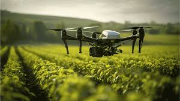

O Brasil é protagonista mundial na produção agropecuária, e a busca por um agro forte, com um futuro sustentável, é urgente e necessária. Esse equilíbrio entre alta produtividade e respeito ambiental não é apenas um ideal, mas uma estratégia vital para garantir a segurança alimentar, preservar recursos naturais e fortalecer a economia. Entender como integrar práticas modernas, tecnologias e gestão responsável no campo é essencial para o desenvolvimento sustentável do setor.
sugetão de conteúdo da professora: mercado de carbono e descarbonização
gvghnjmk
g njnujnj
bhnhyhgf
